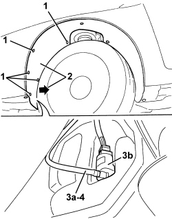
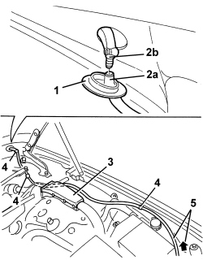

5050B16 WINDSCREEN WASHER JETS LOWER PIPE - R. R.
- Path
- Procedures > 50 AUXILIARY UNITS > 5050 SCREEN WASHERS AND HEADLAMP WASH/WIPE > 5050B WINDSCREEN WASH/WIPE > 5050B16 WINDSCREEN WASHER JETS LOWER PIPE - R. R.
- Kind
- repair procedure (removal / refitting; the operation number is the code)
- Applies to
- all engines; all production periods
- Interactive page
- https://sloeber94.github.io/elrnDB-aBrrSpdr/en/#/946002302
Applies to: all engines; all production periods
 Removing
Removing
 Refitting
Refitting- Position the vehicle on a lift.
- Raise the vehicle.
1. Undo the front bolts fixing the left front wheel arch.
2. Move the wheel arch slightly.
3. Disconnect the windscreen washer supply pipe (3a) from the pump (3b).
4. Fit a sensor in the end of the pipe (3b) to be used for reinserting the pipe during the refitting stage.

Applies to: all engines; all production periods
- Lower the vehicle.
Op. 5050B34 WINDSCREEN WIPER ARM/S COMPLETE WITH BLADE - R+R
Op. 7025A34 BONNET LID LOCK (ONE) - R+R OR REPAIR
Op. 7210E22 R.R. WINDSCREEN BASE TRIM
1. Release the duct seal from the bonnet.
2. Disconnect the pipe (2a) from the connector (2b).
3. Remove the cover after having released the retainers.
4. Release the pipe retainers.
5. Extract the pipe leaving the sensor in its place.

Applies to: all engines; all production periods
Refitting
Removing- Check that the pipe is not damaged.
- Refit the pipe with the help of the sensor.
- Attach the pipe retainers.
- Position the cover and attach the retainers.
- Connect the pipe to the connector.
- Attach the duct seal to the bonnet.
Op. 7210E22 R.R. WINDSCREEN BASE TRIM
Op. 5050B34 WINDSCREEN WIPER ARM/S COMPLETE WITH BLADE - R+R
Op. 7025A34 BONNET LID LOCK (ONE) - R+R OR REPAIR
- Raise the vehicle.
- Remove the sensor.
- Connect the windscreen washer supply pipe to the pump.
- Place the wheel arch in position and fit it.
- Tighten the wheel arch retaining bolts.
- Top up the windscreen washer fluid reservoir.
- Remove the vehicle from the lift.
- Check that the windscreen washer jets are working.